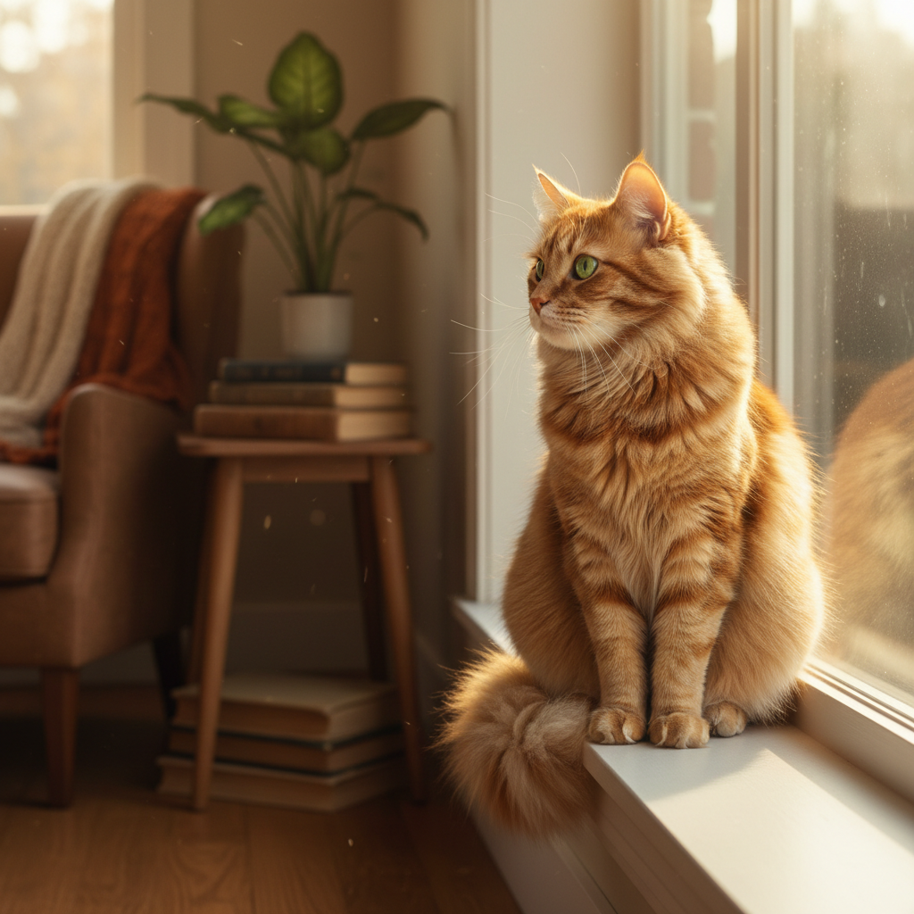
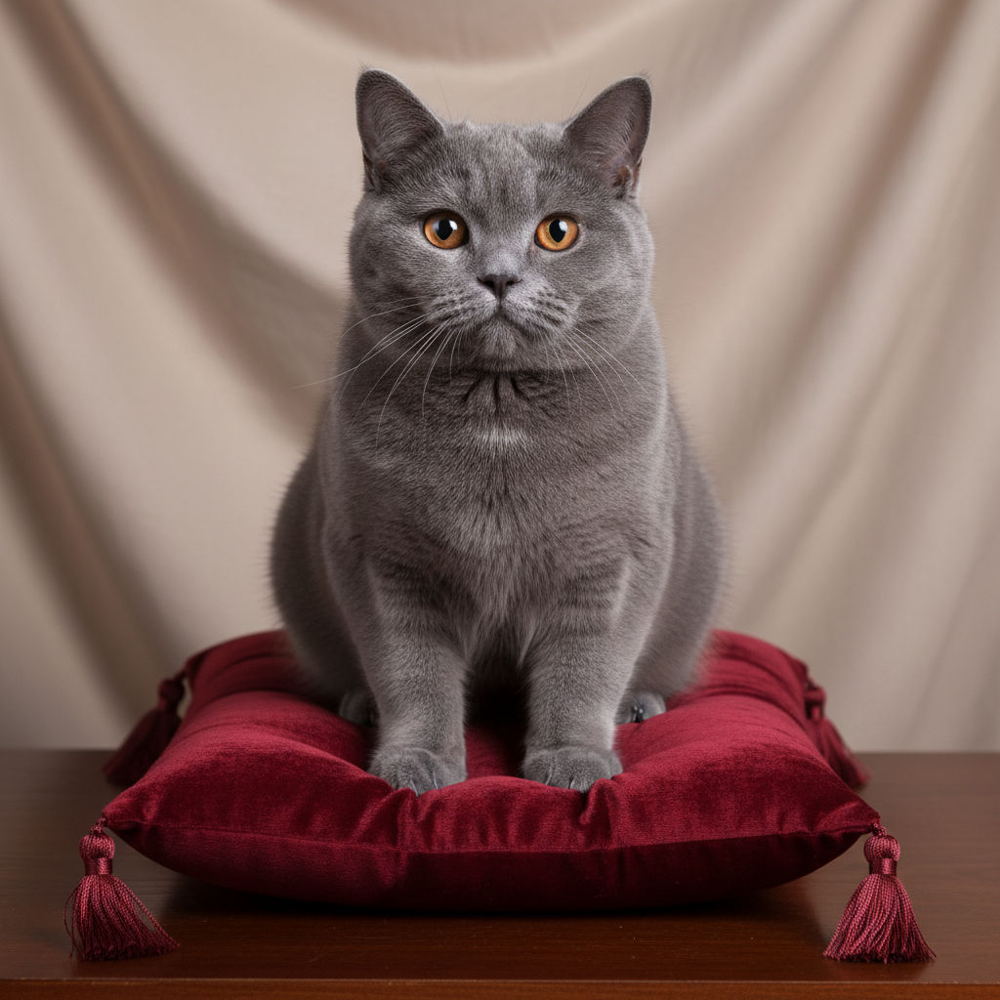

Care basics
A simple routine for food, water, litter, grooming, handling, identification, and annual veterinary care.
Read care basicsCat content research
Three concise pages translate cat welfare and veterinary guidance into daily routines for feeding, litter, play, space, and behavior changes.
Image: mission-provided cat-sunlit-window.png

A simple routine for food, water, litter, grooming, handling, identification, and annual veterinary care.
Read care basicsDesign a home with safe retreats, separated resources, play, predictable interaction, and scent continuity.
Plan enrichment
Scratching, litter box changes, hiding, and overgrooming are easier to respond to when you know what they can signal.
Decode behavior